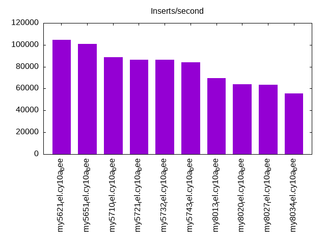
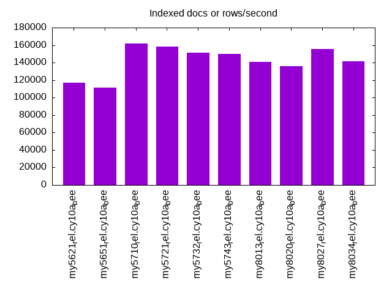
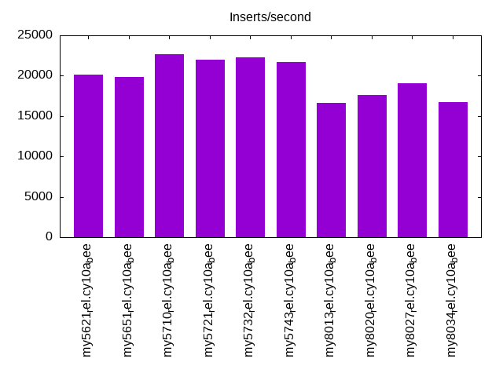
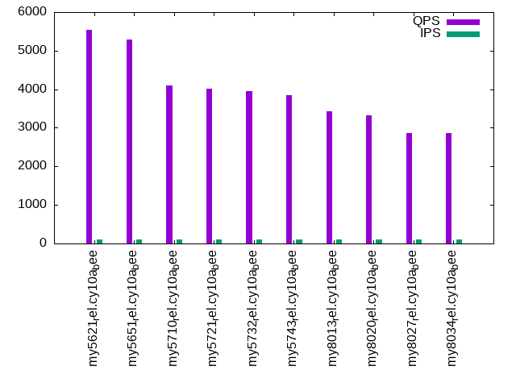
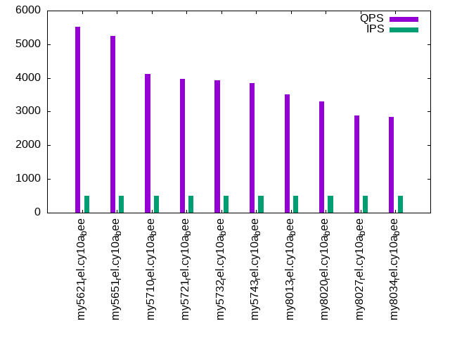
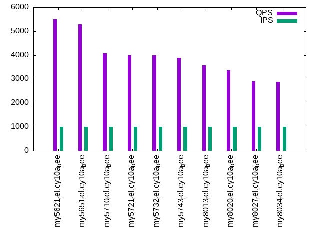

This is a report for the insert benchmark with 20M docs and 1 client(s). It is generated by scripts (bash, awk, sed) and Tufte might not be impressed. An overview of the insert benchmark is here and a short update is here. Below, by DBMS, I mean DBMS+version.config. An example is my8020.c10b40 where my means MySQL, 8020 is version 8.0.20 and c10b40 is the name for the configuration file.
The test server has 8 AMD cores, 16G RAM and an NVMe SSD. It is described here as the Beelink. The benchmark was run with 1 client and there were 1 or 3 connections per client (1 for queries or inserts without rate limits, 1+1 for rate limited inserts+deletes). There is 1 table. It loads 20M rows without secondary indexes, creates secondary indexes, then inserts 50M rows with a delete per insert to avoid growing the table. It then does 3 read+write tests for 1200s each that do queries as fast as possible with 100, 500 and then 1000 inserts/second/client concurrent with the queries and 1000 deletes/second to avoid growing the table. The database is (or should be) cached by InnoDB.
The tested DBMS are:
The numbers are inserts/s for l.i0 and l.i1, indexed docs (or rows) /s for l.x and queries/s for q100, q500, q1000. The values are the average rate over the entire test for inserts (IPS) and queries (QPS). The range of values for IPS and QPS is split into 3 parts: bottom 25%, middle 50%, top 25%. Values in the bottom 25% have a red background, values in the top 25% have a green background and values in the middle have no color. A gray background is used for values that can be ignored because the DBMS did not sustain the target insert rate. Red backgrounds are not used when the minimum value is within 80% of the max value.
| dbms | l.i0 | l.x | l.i1 | q100.1 | q500.1 | q1000.1 |
|---|---|---|---|---|---|---|
| my5621_rel.cy10a_bee | 104712 | 116860 | 20137 | 5533 | 5519 | 5505 |
| my5651_rel.cy10a_bee | 101010 | 111667 | 19881 | 5296 | 5245 | 5285 |
| my5710_rel.cy10a_bee | 88889 | 162097 | 22645 | 4104 | 4127 | 4087 |
| my5721_rel.cy10a_bee | 86207 | 158268 | 22007 | 4009 | 3981 | 3988 |
| my5732_rel.cy10a_bee | 86580 | 151128 | 22272 | 3958 | 3920 | 3992 |
| my5743_rel.cy10a_bee | 84034 | 150000 | 21730 | 3854 | 3856 | 3885 |
| my8013_rel.cy10a_bee | 69444 | 140559 | 16667 | 3438 | 3522 | 3568 |
| my8020_rel.cy10a_bee | 64102 | 135811 | 17606 | 3321 | 3306 | 3362 |
| my8027_rel.cy10a_bee | 63291 | 155814 | 19069 | 2871 | 2880 | 2897 |
| my8034_rel.cy10a_bee | 55710 | 141549 | 16773 | 2860 | 2852 | 2891 |
This table has relative throughput, throughput for the DBMS relative to the DBMS in the first line, using the absolute throughput from the previous table. Values less than 0.95 have a yellow background. Values greater than 1.05 have a blue background.
| dbms | l.i0 | l.x | l.i1 | q100.1 | q500.1 | q1000.1 |
|---|---|---|---|---|---|---|
| my5621_rel.cy10a_bee | 1.00 | 1.00 | 1.00 | 1.00 | 1.00 | 1.00 |
| my5651_rel.cy10a_bee | 0.96 | 0.96 | 0.99 | 0.96 | 0.95 | 0.96 |
| my5710_rel.cy10a_bee | 0.85 | 1.39 | 1.12 | 0.74 | 0.75 | 0.74 |
| my5721_rel.cy10a_bee | 0.82 | 1.35 | 1.09 | 0.72 | 0.72 | 0.72 |
| my5732_rel.cy10a_bee | 0.83 | 1.29 | 1.11 | 0.72 | 0.71 | 0.73 |
| my5743_rel.cy10a_bee | 0.80 | 1.28 | 1.08 | 0.70 | 0.70 | 0.71 |
| my8013_rel.cy10a_bee | 0.66 | 1.20 | 0.83 | 0.62 | 0.64 | 0.65 |
| my8020_rel.cy10a_bee | 0.61 | 1.16 | 0.87 | 0.60 | 0.60 | 0.61 |
| my8027_rel.cy10a_bee | 0.60 | 1.33 | 0.95 | 0.52 | 0.52 | 0.53 |
| my8034_rel.cy10a_bee | 0.53 | 1.21 | 0.83 | 0.52 | 0.52 | 0.53 |
This lists the average rate of inserts/s for the tests that do inserts concurrent with queries. For such tests the query rate is listed in the table above. The read+write tests are setup so that the insert rate should match the target rate every second. Cells that are not at least 95% of the target have a red background to indicate a failure to satisfy the target.
| dbms | q100.1 | q500.1 | q1000.1 |
|---|---|---|---|
| my5621_rel.cy10a_bee | 100 | 499 | 997 |
| my5651_rel.cy10a_bee | 100 | 498 | 997 |
| my5710_rel.cy10a_bee | 100 | 499 | 997 |
| my5721_rel.cy10a_bee | 100 | 499 | 998 |
| my5732_rel.cy10a_bee | 100 | 499 | 998 |
| my5743_rel.cy10a_bee | 100 | 499 | 997 |
| my8013_rel.cy10a_bee | 100 | 499 | 998 |
| my8020_rel.cy10a_bee | 100 | 499 | 997 |
| my8027_rel.cy10a_bee | 100 | 499 | 998 |
| my8034_rel.cy10a_bee | 100 | 499 | 998 |
| target | 100 | 500 | 1000 |
l.i0: load without secondary indexes. Graphs for performance per 1-second interval are here.
Average throughput:
Insert response time histogram: each cell has the percentage of responses that take <= the time in the header and max is the max response time in seconds. For the max column values in the top 25% of the range have a red background and in the bottom 25% of the range have a green background. The red background is not used when the min value is within 80% of the max value.
| dbms | 256us | 1ms | 4ms | 16ms | 64ms | 256ms | 1s | 4s | 16s | gt | max |
|---|---|---|---|---|---|---|---|---|---|---|---|
| my5621_rel.cy10a_bee | 95.609 | 4.290 | 0.097 | 0.003 | 0.100 | ||||||
| my5651_rel.cy10a_bee | 93.077 | 6.814 | 0.103 | 0.002 | 0.003 | 0.100 | |||||
| my5710_rel.cy10a_bee | 24.671 | 75.035 | 0.285 | 0.005 | 0.003 | 0.102 | |||||
| my5721_rel.cy10a_bee | 5.181 | 94.522 | 0.288 | 0.006 | 0.003 | 0.104 | |||||
| my5732_rel.cy10a_bee | 10.859 | 88.797 | 0.201 | 0.139 | 0.003 | 0.109 | |||||
| my5743_rel.cy10a_bee | 3.051 | 96.596 | 0.205 | 0.145 | 0.003 | 0.103 | |||||
| my8013_rel.cy10a_bee | 99.399 | 0.497 | 0.103 | 0.061 | |||||||
| my8020_rel.cy10a_bee | 99.350 | 0.495 | 0.151 | 0.003 | 0.078 | ||||||
| my8027_rel.cy10a_bee | 99.545 | 0.309 | 0.143 | 0.003 | 0.076 | ||||||
| my8034_rel.cy10a_bee | 99.398 | 0.459 | 0.141 | 0.003 | 0.076 |
Performance metrics for the DBMS listed above. Some are normalized by throughput, others are not. Legend for results is here.
ips qps rps rmbps wps wmbps rpq rkbpq wpi wkbpi csps cpups cspq cpupq dbgb1 dbgb2 rss maxop p50 p99 tag 104712 0 921 3.6 55.0 23.9 0.009 0.035 0.001 0.234 11974 22.3 0.114 17 1.3 41.8 1.9 0.100 105919 90695 20m.my5621_rel.cy10a_bee 101010 0 884 3.5 53.0 23.0 0.009 0.035 0.001 0.233 11523 21.8 0.114 17 1.3 41.8 1.9 0.100 101591 88504 20m.my5651_rel.cy10a_bee 88889 0 0 0.0 138.1 22.5 0.000 0.000 0.002 0.259 8725 21.0 0.098 19 1.3 41.8 2.2 0.102 89541 77824 20m.my5710_rel.cy10a_bee 86207 0 0 0.0 133.6 21.9 0.000 0.000 0.002 0.260 8483 21.0 0.098 19 1.3 41.8 2.2 0.104 86705 75515 20m.my5721_rel.cy10a_bee 86580 0 0 0.0 135.2 21.9 0.000 0.000 0.002 0.259 8520 20.7 0.098 19 1.3 41.8 2.2 0.109 86886 74515 20m.my5732_rel.cy10a_bee 84034 0 0 0.0 132.5 21.4 0.000 0.000 0.002 0.261 8366 20.8 0.100 20 1.3 41.8 2.3 0.103 85161 73065 20m.my5743_rel.cy10a_bee 69444 0 0 0.0 370.5 26.4 0.000 0.000 0.005 0.389 56060 35.0 0.807 40 1.3 3.9 2.4 0.061 69523 63629 20m.my8013_rel.cy10a_bee 64102 0 0 0.0 306.4 21.7 0.000 0.000 0.005 0.347 17332 22.5 0.270 28 1.3 9.9 2.4 0.078 64242 58036 20m.my8020_rel.cy10a_bee 63291 0 0 0.0 297.3 21.4 0.000 0.000 0.005 0.346 7099 20.8 0.112 26 1.3 9.9 2.4 0.076 63535 57236 20m.my8027_rel.cy10a_bee 55710 0 0 0.0 273.9 19.3 0.000 0.000 0.005 0.355 6477 20.0 0.116 29 1.3 9.9 2.5 0.076 56053 49964 20m.my8034_rel.cy10a_bee
l.x: create secondary indexes.
Average throughput:
Performance metrics for the DBMS listed above. Some are normalized by throughput, others are not. Legend for results is here.
ips qps rps rmbps wps wmbps rpq rkbpq wpi wkbpi csps cpups cspq cpupq dbgb1 dbgb2 rss maxop p50 p99 tag 116860 0 17 0.1 1308.4 121.0 0.000 0.001 0.011 1.061 3863 11.8 0.033 8 2.7 43.2 3.1 0.010 NA NA 20m.my5621_rel.cy10a_bee 111667 0 22 0.1 1307.8 117.5 0.000 0.001 0.012 1.078 3879 11.4 0.035 8 2.7 43.2 3.0 0.009 NA NA 20m.my5651_rel.cy10a_bee 162097 0 0 0.0 1680.8 142.0 0.000 0.000 0.010 0.897 8871 12.3 0.055 6 3.0 43.5 3.4 0.012 NA NA 20m.my5710_rel.cy10a_bee 158268 0 0 0.0 1662.1 140.5 0.000 0.000 0.011 0.909 9695 12.5 0.061 6 3.0 43.5 3.3 0.012 NA NA 20m.my5721_rel.cy10a_bee 151128 0 0 0.0 1565.5 133.0 0.000 0.000 0.010 0.901 8951 12.4 0.059 7 3.0 43.5 3.2 0.019 NA NA 20m.my5732_rel.cy10a_bee 150000 0 0 0.0 1573.0 132.8 0.000 0.000 0.010 0.907 8760 12.4 0.058 7 3.0 43.5 3.2 0.019 NA NA 20m.my5743_rel.cy10a_bee 140559 0 0 0.0 970.4 109.7 0.000 0.000 0.007 0.800 12044 14.2 0.086 8 3.0 5.5 3.4 0.011 NA NA 20m.my8013_rel.cy10a_bee 135811 0 0 0.0 1131.2 107.3 0.000 0.000 0.008 0.809 8199 12.2 0.060 7 3.0 11.5 3.0 0.014 NA NA 20m.my8020_rel.cy10a_bee 155814 0 791 51.4 2243.0 150.9 0.005 0.338 0.014 0.991 9103 43.4 0.058 22 3.0 11.5 3.5 0.011 NA NA 20m.my8027_rel.cy10a_bee 141549 0 706 45.9 2475.1 143.5 0.005 0.332 0.017 1.038 9649 42.7 0.068 24 3.0 11.5 3.0 0.012 NA NA 20m.my8034_rel.cy10a_bee
l.i1: continue load after secondary indexes created. Graphs for performance per 1-second interval are here.
Average throughput:
Insert response time histogram: each cell has the percentage of responses that take <= the time in the header and max is the max response time in seconds. For the max column values in the top 25% of the range have a red background and in the bottom 25% of the range have a green background. The red background is not used when the min value is within 80% of the max value.
| dbms | 256us | 1ms | 4ms | 16ms | 64ms | 256ms | 1s | 4s | 16s | gt | max |
|---|---|---|---|---|---|---|---|---|---|---|---|
| my5621_rel.cy10a_bee | 96.483 | 3.355 | 0.159 | 0.003 | 0.101 | ||||||
| my5651_rel.cy10a_bee | 96.381 | 3.458 | 0.160 | 0.002 | 0.100 | ||||||
| my5710_rel.cy10a_bee | 98.244 | 1.722 | 0.030 | 0.004 | 0.102 | ||||||
| my5721_rel.cy10a_bee | 97.947 | 2.027 | 0.023 | 0.004 | 0.094 | ||||||
| my5732_rel.cy10a_bee | 97.939 | 2.005 | 0.052 | 0.003 | 0.093 | ||||||
| my5743_rel.cy10a_bee | 97.885 | 2.057 | 0.054 | 0.003 | 0.086 | ||||||
| my8013_rel.cy10a_bee | 93.838 | 5.231 | 0.898 | 0.034 | 0.188 | ||||||
| my8020_rel.cy10a_bee | 96.658 | 2.926 | 0.382 | 0.034 | 0.173 | ||||||
| my8027_rel.cy10a_bee | 96.917 | 2.952 | 0.129 | 0.002 | 0.106 | ||||||
| my8034_rel.cy10a_bee | 95.687 | 4.135 | 0.178 | 0.001 | 0.112 |
Delete response time histogram: each cell has the percentage of responses that take <= the time in the header and max is the max response time in seconds. For the max column values in the top 25% of the range have a red background and in the bottom 25% of the range have a green background. The red background is not used when the min value is within 80% of the max value.
| dbms | 256us | 1ms | 4ms | 16ms | 64ms | 256ms | 1s | 4s | 16s | gt | max |
|---|---|---|---|---|---|---|---|---|---|---|---|
| my5621_rel.cy10a_bee | 97.378 | 2.499 | 0.120 | 0.003 | 0.083 | ||||||
| my5651_rel.cy10a_bee | 97.456 | 2.426 | 0.117 | 0.001 | 0.078 | ||||||
| my5710_rel.cy10a_bee | 98.874 | 1.112 | 0.011 | 0.003 | 0.102 | ||||||
| my5721_rel.cy10a_bee | 98.533 | 1.454 | 0.009 | 0.003 | 0.097 | ||||||
| my5732_rel.cy10a_bee | 98.484 | 1.502 | 0.010 | 0.003 | 0.094 | ||||||
| my5743_rel.cy10a_bee | 98.472 | 1.513 | 0.011 | 0.003 | 0.088 | ||||||
| my8013_rel.cy10a_bee | 95.407 | 3.963 | 0.615 | 0.015 | 0.154 | ||||||
| my8020_rel.cy10a_bee | 97.982 | 1.694 | 0.308 | 0.015 | 0.166 | ||||||
| my8027_rel.cy10a_bee | 97.769 | 2.188 | 0.041 | 0.002 | 0.108 | ||||||
| my8034_rel.cy10a_bee | 97.109 | 2.823 | 0.067 | 0.001 | 0.112 |
Performance metrics for the DBMS listed above. Some are normalized by throughput, others are not. Legend for results is here.
ips qps rps rmbps wps wmbps rpq rkbpq wpi wkbpi csps cpups cspq cpupq dbgb1 dbgb2 rss maxop p50 p99 tag 20137 0 680 2.7 992.5 55.3 0.034 0.135 0.049 2.812 14242 34.6 0.707 137 3.8 44.3 4.5 0.101 21486 5094 20m.my5621_rel.cy10a_bee 19881 0 667 2.6 972.7 54.4 0.034 0.134 0.049 2.803 14194 34.4 0.714 138 3.8 44.3 4.5 0.100 21227 4795 20m.my5651_rel.cy10a_bee 22645 0 0 0.0 1119.3 58.9 0.000 0.000 0.049 2.665 12843 38.4 0.567 136 4.5 45.0 5.5 0.102 23035 7689 20m.my5710_rel.cy10a_bee 22007 0 0 0.0 1128.7 60.0 0.000 0.000 0.051 2.791 12732 38.1 0.579 139 4.4 44.9 5.5 0.094 22525 8493 20m.my5721_rel.cy10a_bee 22272 0 0 0.0 1149.6 61.2 0.000 0.000 0.052 2.814 12618 37.8 0.567 136 4.4 44.9 5.5 0.093 22823 7542 20m.my5732_rel.cy10a_bee 21730 0 0 0.0 1130.5 59.9 0.000 0.000 0.052 2.822 12353 37.7 0.569 139 4.4 44.9 5.5 0.086 22275 7492 20m.my5743_rel.cy10a_bee 16667 0 0 0.0 5584.5 188.6 0.000 0.000 0.335 11.585 73462 47.3 4.408 227 4.0 6.6 5.2 0.188 17738 4745 20m.my8013_rel.cy10a_bee 17606 0 32 0.5 2905.3 94.8 0.002 0.030 0.165 5.512 31080 37.3 1.765 169 4.1 12.8 5.4 0.173 18530 5644 20m.my8020_rel.cy10a_bee 19069 0 35 0.6 3028.8 99.4 0.002 0.030 0.159 5.337 17752 36.7 0.931 154 4.3 13.0 5.5 0.106 19828 5742 20m.my8027_rel.cy10a_bee 16773 0 31 0.5 3619.6 118.5 0.002 0.030 0.216 7.237 18813 36.2 1.122 173 4.2 13.0 5.6 0.112 17481 4545 20m.my8034_rel.cy10a_bee
q100.1: range queries with 100 insert/s per client. Graphs for performance per 1-second interval are here.
Average throughput:
Query response time histogram: each cell has the percentage of responses that take <= the time in the header and max is the max response time in seconds. For max values in the top 25% of the range have a red background and in the bottom 25% of the range have a green background. The red background is not used when the min value is within 80% of the max value.
| dbms | 256us | 1ms | 4ms | 16ms | 64ms | 256ms | 1s | 4s | 16s | gt | max |
|---|---|---|---|---|---|---|---|---|---|---|---|
| my5621_rel.cy10a_bee | 95.789 | 4.206 | 0.002 | 0.003 | 0.015 | ||||||
| my5651_rel.cy10a_bee | 94.855 | 5.139 | 0.003 | 0.003 | nonzero | 0.016 | |||||
| my5710_rel.cy10a_bee | 71.023 | 28.977 | nonzero | 0.003 | |||||||
| my5721_rel.cy10a_bee | 69.148 | 30.852 | nonzero | 0.002 | |||||||
| my5732_rel.cy10a_bee | 67.452 | 32.547 | 0.001 | nonzero | 0.004 | ||||||
| my5743_rel.cy10a_bee | 63.890 | 36.110 | nonzero | 0.003 | |||||||
| my8013_rel.cy10a_bee | 43.466 | 56.534 | nonzero | 0.004 | |||||||
| my8020_rel.cy10a_bee | 34.839 | 65.161 | nonzero | 0.003 | |||||||
| my8027_rel.cy10a_bee | 8.089 | 91.910 | nonzero | 0.003 | |||||||
| my8034_rel.cy10a_bee | 7.318 | 92.681 | 0.001 | 0.003 |
Insert response time histogram: each cell has the percentage of responses that take <= the time in the header and max is the max response time in seconds. For max values in the top 25% of the range have a red background and in the bottom 25% of the range have a green background. The red background is not used when the min value is within 80% of the max value.
| dbms | 256us | 1ms | 4ms | 16ms | 64ms | 256ms | 1s | 4s | 16s | gt | max |
|---|---|---|---|---|---|---|---|---|---|---|---|
| my5621_rel.cy10a_bee | 50.500 | 48.417 | 1.083 | 0.025 | |||||||
| my5651_rel.cy10a_bee | 54.917 | 44.250 | 0.833 | 0.026 | |||||||
| my5710_rel.cy10a_bee | 99.583 | 0.417 | 0.011 | ||||||||
| my5721_rel.cy10a_bee | 99.125 | 0.875 | 0.009 | ||||||||
| my5732_rel.cy10a_bee | 99.542 | 0.458 | 0.012 | ||||||||
| my5743_rel.cy10a_bee | 99.667 | 0.333 | 0.009 | ||||||||
| my8013_rel.cy10a_bee | 93.625 | 6.042 | 0.333 | 0.023 | |||||||
| my8020_rel.cy10a_bee | 97.667 | 2.333 | 0.014 | ||||||||
| my8027_rel.cy10a_bee | 99.542 | 0.458 | 0.014 | ||||||||
| my8034_rel.cy10a_bee | 99.667 | 0.292 | 0.042 | 0.016 |
Delete response time histogram: each cell has the percentage of responses that take <= the time in the header and max is the max response time in seconds. For max values in the top 25% of the range have a red background and in the bottom 25% of the range have a green background. The red background is not used when the min value is within 80% of the max value.
| dbms | 256us | 1ms | 4ms | 16ms | 64ms | 256ms | 1s | 4s | 16s | gt | max |
|---|---|---|---|---|---|---|---|---|---|---|---|
| my5621_rel.cy10a_bee | 51.958 | 47.833 | 0.208 | 0.018 | |||||||
| my5651_rel.cy10a_bee | 58.083 | 41.375 | 0.542 | 0.027 | |||||||
| my5710_rel.cy10a_bee | 99.625 | 0.375 | 0.008 | ||||||||
| my5721_rel.cy10a_bee | 99.292 | 0.708 | 0.008 | ||||||||
| my5732_rel.cy10a_bee | 99.625 | 0.375 | 0.012 | ||||||||
| my5743_rel.cy10a_bee | 99.708 | 0.292 | 0.008 | ||||||||
| my8013_rel.cy10a_bee | 95.708 | 4.167 | 0.125 | 0.018 | |||||||
| my8020_rel.cy10a_bee | 98.833 | 1.167 | 0.014 | ||||||||
| my8027_rel.cy10a_bee | 99.667 | 0.333 | 0.014 | ||||||||
| my8034_rel.cy10a_bee | 99.750 | 0.250 | 0.008 |
Performance metrics for the DBMS listed above. Some are normalized by throughput, others are not. Legend for results is here.
ips qps rps rmbps wps wmbps rpq rkbpq wpi wkbpi csps cpups cspq cpupq dbgb1 dbgb2 rss maxop p50 p99 tag 100 5533 4 0.0 716.9 21.5 0.001 0.003 7.183 220.870 23647 13.1 4.274 189 3.8 44.3 4.5 0.015 5482 5308 20m.my5621_rel.cy10a_bee 100 5296 4 0.0 696.0 20.9 0.001 0.003 6.988 215.051 22863 13.3 4.317 201 3.8 44.3 4.5 0.016 5258 5051 20m.my5651_rel.cy10a_bee 100 4104 0 0.0 64.0 1.9 0.000 0.000 0.642 19.556 16089 12.6 3.921 246 4.5 45.0 5.5 0.003 4063 3851 20m.my5710_rel.cy10a_bee 100 4009 0 0.0 54.8 1.6 0.000 0.000 0.549 16.709 15654 12.8 3.905 255 4.4 44.9 5.5 0.002 3995 3788 20m.my5721_rel.cy10a_bee 100 3958 0 0.0 48.1 1.4 0.000 0.000 0.483 14.677 15459 12.7 3.905 257 4.4 44.9 5.5 0.004 3927 3724 20m.my5732_rel.cy10a_bee 100 3854 0 0.0 55.6 1.7 0.000 0.000 0.557 17.004 15088 12.7 3.915 264 4.4 44.9 5.5 0.003 3835 3628 20m.my5743_rel.cy10a_bee 100 3438 0 0.0 330.0 9.6 0.000 0.000 3.307 98.781 15815 13.2 4.600 307 4.0 6.6 5.2 0.004 3436 3245 20m.my8013_rel.cy10a_bee 100 3321 0 0.0 132.0 3.3 0.000 0.000 1.324 33.941 13798 12.8 4.155 308 4.1 12.8 5.4 0.003 3294 3116 20m.my8020_rel.cy10a_bee 100 2871 0 0.0 149.0 3.6 0.000 0.000 1.493 37.447 11643 12.7 4.056 354 4.3 13.0 5.6 0.003 2845 2734 20m.my8027_rel.cy10a_bee 100 2860 0 0.0 212.0 5.3 0.000 0.000 2.124 54.334 11962 12.8 4.182 358 4.2 13.0 5.6 0.003 2844 2717 20m.my8034_rel.cy10a_bee
q500.1: range queries with 500 insert/s per client. Graphs for performance per 1-second interval are here.
Average throughput:
Query response time histogram: each cell has the percentage of responses that take <= the time in the header and max is the max response time in seconds. For max values in the top 25% of the range have a red background and in the bottom 25% of the range have a green background. The red background is not used when the min value is within 80% of the max value.
| dbms | 256us | 1ms | 4ms | 16ms | 64ms | 256ms | 1s | 4s | 16s | gt | max |
|---|---|---|---|---|---|---|---|---|---|---|---|
| my5621_rel.cy10a_bee | 95.715 | 4.280 | 0.003 | 0.002 | 0.016 | ||||||
| my5651_rel.cy10a_bee | 94.373 | 5.622 | 0.003 | 0.003 | nonzero | 0.016 | |||||
| my5710_rel.cy10a_bee | 71.102 | 28.897 | 0.001 | nonzero | 0.006 | ||||||
| my5721_rel.cy10a_bee | 67.843 | 32.156 | nonzero | 0.003 | |||||||
| my5732_rel.cy10a_bee | 65.408 | 34.592 | nonzero | 0.003 | |||||||
| my5743_rel.cy10a_bee | 63.728 | 36.272 | nonzero | 0.003 | |||||||
| my8013_rel.cy10a_bee | 48.658 | 51.341 | 0.001 | nonzero | 0.008 | ||||||
| my8020_rel.cy10a_bee | 34.476 | 65.523 | nonzero | 0.003 | |||||||
| my8027_rel.cy10a_bee | 9.322 | 90.676 | 0.002 | 0.004 | |||||||
| my8034_rel.cy10a_bee | 7.191 | 92.808 | 0.001 | nonzero | 0.005 |
Insert response time histogram: each cell has the percentage of responses that take <= the time in the header and max is the max response time in seconds. For max values in the top 25% of the range have a red background and in the bottom 25% of the range have a green background. The red background is not used when the min value is within 80% of the max value.
| dbms | 256us | 1ms | 4ms | 16ms | 64ms | 256ms | 1s | 4s | 16s | gt | max |
|---|---|---|---|---|---|---|---|---|---|---|---|
| my5621_rel.cy10a_bee | 87.642 | 12.200 | 0.158 | 0.023 | |||||||
| my5651_rel.cy10a_bee | 89.375 | 10.500 | 0.125 | 0.019 | |||||||
| my5710_rel.cy10a_bee | 99.467 | 0.533 | 0.015 | ||||||||
| my5721_rel.cy10a_bee | 99.442 | 0.558 | 0.013 | ||||||||
| my5732_rel.cy10a_bee | 99.650 | 0.350 | 0.013 | ||||||||
| my5743_rel.cy10a_bee | 99.608 | 0.392 | 0.013 | ||||||||
| my8013_rel.cy10a_bee | 94.500 | 5.442 | 0.058 | 0.026 | |||||||
| my8020_rel.cy10a_bee | 97.817 | 2.150 | 0.033 | 0.040 | |||||||
| my8027_rel.cy10a_bee | 99.533 | 0.467 | 0.015 | ||||||||
| my8034_rel.cy10a_bee | 98.950 | 1.033 | 0.017 | 0.025 |
Delete response time histogram: each cell has the percentage of responses that take <= the time in the header and max is the max response time in seconds. For max values in the top 25% of the range have a red background and in the bottom 25% of the range have a green background. The red background is not used when the min value is within 80% of the max value.
| dbms | 256us | 1ms | 4ms | 16ms | 64ms | 256ms | 1s | 4s | 16s | gt | max |
|---|---|---|---|---|---|---|---|---|---|---|---|
| my5621_rel.cy10a_bee | 89.933 | 9.958 | 0.108 | 0.024 | |||||||
| my5651_rel.cy10a_bee | 90.300 | 9.642 | 0.058 | 0.029 | |||||||
| my5710_rel.cy10a_bee | 99.617 | 0.383 | 0.014 | ||||||||
| my5721_rel.cy10a_bee | 99.692 | 0.308 | 0.012 | ||||||||
| my5732_rel.cy10a_bee | 99.742 | 0.258 | 0.012 | ||||||||
| my5743_rel.cy10a_bee | 99.742 | 0.258 | 0.012 | ||||||||
| my8013_rel.cy10a_bee | 95.758 | 4.192 | 0.050 | 0.024 | |||||||
| my8020_rel.cy10a_bee | 98.442 | 1.525 | 0.033 | 0.027 | |||||||
| my8027_rel.cy10a_bee | 99.650 | 0.350 | 0.015 | ||||||||
| my8034_rel.cy10a_bee | 99.408 | 0.583 | 0.008 | 0.025 |
Performance metrics for the DBMS listed above. Some are normalized by throughput, others are not. Legend for results is here.
ips qps rps rmbps wps wmbps rpq rkbpq wpi wkbpi csps cpups cspq cpupq dbgb1 dbgb2 rss maxop p50 p99 tag 499 5519 16 0.1 1028.5 31.4 0.003 0.012 2.062 64.420 24792 13.7 4.492 199 3.8 44.3 4.5 0.016 5471 5305 20m.my5621_rel.cy10a_bee 498 5245 16 0.1 348.8 11.0 0.003 0.013 0.701 22.549 21719 13.6 4.141 207 3.8 44.3 4.5 0.016 5227 5018 20m.my5651_rel.cy10a_bee 499 4127 0 0.0 20.2 1.1 0.000 0.000 0.040 2.180 16103 13.5 3.902 262 4.5 45.0 5.6 0.006 4075 3869 20m.my5710_rel.cy10a_bee 499 3981 0 0.0 5.5 0.6 0.000 0.000 0.011 1.277 15503 13.7 3.894 275 4.4 44.9 5.5 0.003 3964 3756 20m.my5721_rel.cy10a_bee 499 3920 0 0.0 6.1 0.6 0.000 0.000 0.012 1.314 15271 13.5 3.896 276 4.4 44.9 5.5 0.003 3883 3676 20m.my5732_rel.cy10a_bee 499 3856 0 0.0 7.6 0.7 0.000 0.000 0.015 1.430 15029 13.5 3.898 280 4.4 44.9 5.5 0.003 3805 3598 20m.my5743_rel.cy10a_bee 499 3522 0 0.0 361.1 11.0 0.000 0.000 0.724 22.578 18117 14.1 5.143 320 4.0 6.6 5.2 0.008 3500 3278 20m.my8013_rel.cy10a_bee 499 3306 0 0.0 26.8 1.1 0.000 0.000 0.054 2.246 13977 13.8 4.227 334 4.1 12.8 5.4 0.003 3286 3116 20m.my8020_rel.cy10a_bee 499 2880 0 0.0 21.5 0.9 0.000 0.000 0.043 1.760 11362 13.4 3.945 372 4.3 13.0 5.6 0.004 2861 2749 20m.my8027_rel.cy10a_bee 499 2852 0 0.0 166.2 4.7 0.000 0.000 0.333 9.590 11888 13.6 4.169 382 4.2 13.0 5.6 0.005 2829 2717 20m.my8034_rel.cy10a_bee
q1000.1: range queries with 1000 insert/s per client. Graphs for performance per 1-second interval are here.
Average throughput:
Query response time histogram: each cell has the percentage of responses that take <= the time in the header and max is the max response time in seconds. For max values in the top 25% of the range have a red background and in the bottom 25% of the range have a green background. The red background is not used when the min value is within 80% of the max value.
| dbms | 256us | 1ms | 4ms | 16ms | 64ms | 256ms | 1s | 4s | 16s | gt | max |
|---|---|---|---|---|---|---|---|---|---|---|---|
| my5621_rel.cy10a_bee | 95.561 | 4.431 | 0.005 | 0.002 | nonzero | 0.020 | |||||
| my5651_rel.cy10a_bee | 94.666 | 5.328 | 0.002 | 0.003 | 0.010 | ||||||
| my5710_rel.cy10a_bee | 70.283 | 29.716 | 0.001 | nonzero | 0.011 | ||||||
| my5721_rel.cy10a_bee | 68.028 | 31.972 | nonzero | nonzero | 0.005 | ||||||
| my5732_rel.cy10a_bee | 68.022 | 31.977 | 0.001 | nonzero | 0.004 | ||||||
| my5743_rel.cy10a_bee | 64.810 | 35.189 | 0.001 | 0.003 | |||||||
| my8013_rel.cy10a_bee | 50.864 | 49.134 | 0.002 | nonzero | 0.005 | ||||||
| my8020_rel.cy10a_bee | 37.741 | 62.257 | 0.002 | nonzero | 0.012 | ||||||
| my8027_rel.cy10a_bee | 10.717 | 89.279 | 0.005 | nonzero | 0.005 | ||||||
| my8034_rel.cy10a_bee | 9.836 | 90.162 | 0.003 | 0.004 |
Insert response time histogram: each cell has the percentage of responses that take <= the time in the header and max is the max response time in seconds. For max values in the top 25% of the range have a red background and in the bottom 25% of the range have a green background. The red background is not used when the min value is within 80% of the max value.
| dbms | 256us | 1ms | 4ms | 16ms | 64ms | 256ms | 1s | 4s | 16s | gt | max |
|---|---|---|---|---|---|---|---|---|---|---|---|
| my5621_rel.cy10a_bee | 90.754 | 9.142 | 0.104 | 0.026 | |||||||
| my5651_rel.cy10a_bee | 94.871 | 5.079 | 0.050 | 0.018 | |||||||
| my5710_rel.cy10a_bee | 99.638 | 0.363 | 0.015 | ||||||||
| my5721_rel.cy10a_bee | 99.542 | 0.458 | 0.016 | ||||||||
| my5732_rel.cy10a_bee | 99.558 | 0.442 | 0.015 | ||||||||
| my5743_rel.cy10a_bee | 99.558 | 0.442 | 0.011 | ||||||||
| my8013_rel.cy10a_bee | 95.062 | 4.862 | 0.075 | 0.021 | |||||||
| my8020_rel.cy10a_bee | 95.650 | 4.263 | 0.088 | 0.021 | |||||||
| my8027_rel.cy10a_bee | 99.321 | 0.662 | 0.017 | 0.020 | |||||||
| my8034_rel.cy10a_bee | 96.933 | 3.042 | 0.025 | 0.026 |
Delete response time histogram: each cell has the percentage of responses that take <= the time in the header and max is the max response time in seconds. For max values in the top 25% of the range have a red background and in the bottom 25% of the range have a green background. The red background is not used when the min value is within 80% of the max value.
| dbms | 256us | 1ms | 4ms | 16ms | 64ms | 256ms | 1s | 4s | 16s | gt | max |
|---|---|---|---|---|---|---|---|---|---|---|---|
| my5621_rel.cy10a_bee | 92.050 | 7.888 | 0.062 | 0.025 | |||||||
| my5651_rel.cy10a_bee | 95.029 | 4.967 | 0.004 | 0.016 | |||||||
| my5710_rel.cy10a_bee | 99.713 | 0.287 | 0.015 | ||||||||
| my5721_rel.cy10a_bee | 99.650 | 0.350 | 0.015 | ||||||||
| my5732_rel.cy10a_bee | 99.662 | 0.338 | 0.014 | ||||||||
| my5743_rel.cy10a_bee | 99.633 | 0.367 | 0.011 | ||||||||
| my8013_rel.cy10a_bee | 95.458 | 4.496 | 0.046 | 0.024 | |||||||
| my8020_rel.cy10a_bee | 96.350 | 3.612 | 0.037 | 0.023 | |||||||
| my8027_rel.cy10a_bee | 99.617 | 0.379 | 0.004 | 0.021 | |||||||
| my8034_rel.cy10a_bee | 99.279 | 0.700 | 0.021 | 0.025 |
Performance metrics for the DBMS listed above. Some are normalized by throughput, others are not. Legend for results is here.
ips qps rps rmbps wps wmbps rpq rkbpq wpi wkbpi csps cpups cspq cpupq dbgb1 dbgb2 rss maxop p50 p99 tag 997 5505 33 0.1 1169.5 36.1 0.006 0.024 1.173 37.095 25390 14.8 4.612 215 3.8 44.3 4.5 0.020 5466 5273 20m.my5621_rel.cy10a_bee 997 5285 33 0.1 3.7 1.1 0.006 0.025 0.004 1.088 20967 14.6 3.967 221 3.8 44.3 4.5 0.010 5243 5052 20m.my5651_rel.cy10a_bee 997 4087 0 0.0 12.7 1.3 0.000 0.000 0.013 1.370 16112 14.6 3.943 286 4.5 45.0 5.6 0.011 4044 3836 20m.my5710_rel.cy10a_bee 998 3988 0 0.0 40.3 2.0 0.000 0.000 0.040 2.045 15840 14.9 3.972 299 4.4 44.9 5.5 0.005 3965 3772 20m.my5721_rel.cy10a_bee 998 3992 0 0.0 50.4 2.2 0.000 0.000 0.051 2.297 15896 14.7 3.982 295 4.4 44.9 5.5 0.004 3932 3709 20m.my5732_rel.cy10a_bee 997 3885 0 0.0 51.5 2.3 0.000 0.000 0.052 2.340 15502 14.8 3.991 305 4.4 44.9 5.5 0.003 3853 3644 20m.my5743_rel.cy10a_bee 998 3568 0 0.0 641.2 20.0 0.000 0.000 0.643 20.502 21523 15.7 6.032 352 4.0 6.6 5.2 0.005 3532 3292 20m.my8013_rel.cy10a_bee 997 3362 0 0.0 313.1 8.7 0.000 0.000 0.314 8.899 15531 15.3 4.620 364 4.1 12.8 5.4 0.012 3340 3103 20m.my8020_rel.cy10a_bee 998 2897 0 0.0 324.4 9.0 0.000 0.000 0.325 9.242 12566 14.5 4.338 400 4.3 13.0 5.6 0.005 2877 2747 20m.my8027_rel.cy10a_bee 998 2891 0 0.0 357.2 10.1 0.000 0.000 0.358 10.385 12810 15.0 4.431 415 4.2 13.0 5.6 0.004 2862 2733 20m.my8034_rel.cy10a_bee
l.i0: load without secondary indexes
Performance metrics for all DBMS, not just the ones listed above. Some are normalized by throughput, others are not. Legend for results is here.
ips qps rps rmbps wps wmbps rpq rkbpq wpi wkbpi csps cpups cspq cpupq dbgb1 dbgb2 rss maxop p50 p99 tag 104712 0 921 3.6 55.0 23.9 0.009 0.035 0.001 0.234 11974 22.3 0.114 17 1.3 41.8 1.9 0.100 105919 90695 20m.my5621_rel.cy10a_bee 101010 0 884 3.5 53.0 23.0 0.009 0.035 0.001 0.233 11523 21.8 0.114 17 1.3 41.8 1.9 0.100 101591 88504 20m.my5651_rel.cy10a_bee 88889 0 0 0.0 138.1 22.5 0.000 0.000 0.002 0.259 8725 21.0 0.098 19 1.3 41.8 2.2 0.102 89541 77824 20m.my5710_rel.cy10a_bee 86207 0 0 0.0 133.6 21.9 0.000 0.000 0.002 0.260 8483 21.0 0.098 19 1.3 41.8 2.2 0.104 86705 75515 20m.my5721_rel.cy10a_bee 86580 0 0 0.0 135.2 21.9 0.000 0.000 0.002 0.259 8520 20.7 0.098 19 1.3 41.8 2.2 0.109 86886 74515 20m.my5732_rel.cy10a_bee 84034 0 0 0.0 132.5 21.4 0.000 0.000 0.002 0.261 8366 20.8 0.100 20 1.3 41.8 2.3 0.103 85161 73065 20m.my5743_rel.cy10a_bee 69444 0 0 0.0 370.5 26.4 0.000 0.000 0.005 0.389 56060 35.0 0.807 40 1.3 3.9 2.4 0.061 69523 63629 20m.my8013_rel.cy10a_bee 64102 0 0 0.0 306.4 21.7 0.000 0.000 0.005 0.347 17332 22.5 0.270 28 1.3 9.9 2.4 0.078 64242 58036 20m.my8020_rel.cy10a_bee 63291 0 0 0.0 297.3 21.4 0.000 0.000 0.005 0.346 7099 20.8 0.112 26 1.3 9.9 2.4 0.076 63535 57236 20m.my8027_rel.cy10a_bee 55710 0 0 0.0 273.9 19.3 0.000 0.000 0.005 0.355 6477 20.0 0.116 29 1.3 9.9 2.5 0.076 56053 49964 20m.my8034_rel.cy10a_bee
l.x: create secondary indexes
Performance metrics for all DBMS, not just the ones listed above. Some are normalized by throughput, others are not. Legend for results is here.
ips qps rps rmbps wps wmbps rpq rkbpq wpi wkbpi csps cpups cspq cpupq dbgb1 dbgb2 rss maxop p50 p99 tag 116860 0 17 0.1 1308.4 121.0 0.000 0.001 0.011 1.061 3863 11.8 0.033 8 2.7 43.2 3.1 0.010 NA NA 20m.my5621_rel.cy10a_bee 111667 0 22 0.1 1307.8 117.5 0.000 0.001 0.012 1.078 3879 11.4 0.035 8 2.7 43.2 3.0 0.009 NA NA 20m.my5651_rel.cy10a_bee 162097 0 0 0.0 1680.8 142.0 0.000 0.000 0.010 0.897 8871 12.3 0.055 6 3.0 43.5 3.4 0.012 NA NA 20m.my5710_rel.cy10a_bee 158268 0 0 0.0 1662.1 140.5 0.000 0.000 0.011 0.909 9695 12.5 0.061 6 3.0 43.5 3.3 0.012 NA NA 20m.my5721_rel.cy10a_bee 151128 0 0 0.0 1565.5 133.0 0.000 0.000 0.010 0.901 8951 12.4 0.059 7 3.0 43.5 3.2 0.019 NA NA 20m.my5732_rel.cy10a_bee 150000 0 0 0.0 1573.0 132.8 0.000 0.000 0.010 0.907 8760 12.4 0.058 7 3.0 43.5 3.2 0.019 NA NA 20m.my5743_rel.cy10a_bee 140559 0 0 0.0 970.4 109.7 0.000 0.000 0.007 0.800 12044 14.2 0.086 8 3.0 5.5 3.4 0.011 NA NA 20m.my8013_rel.cy10a_bee 135811 0 0 0.0 1131.2 107.3 0.000 0.000 0.008 0.809 8199 12.2 0.060 7 3.0 11.5 3.0 0.014 NA NA 20m.my8020_rel.cy10a_bee 155814 0 791 51.4 2243.0 150.9 0.005 0.338 0.014 0.991 9103 43.4 0.058 22 3.0 11.5 3.5 0.011 NA NA 20m.my8027_rel.cy10a_bee 141549 0 706 45.9 2475.1 143.5 0.005 0.332 0.017 1.038 9649 42.7 0.068 24 3.0 11.5 3.0 0.012 NA NA 20m.my8034_rel.cy10a_bee
l.i1: continue load after secondary indexes created
Performance metrics for all DBMS, not just the ones listed above. Some are normalized by throughput, others are not. Legend for results is here.
ips qps rps rmbps wps wmbps rpq rkbpq wpi wkbpi csps cpups cspq cpupq dbgb1 dbgb2 rss maxop p50 p99 tag 20137 0 680 2.7 992.5 55.3 0.034 0.135 0.049 2.812 14242 34.6 0.707 137 3.8 44.3 4.5 0.101 21486 5094 20m.my5621_rel.cy10a_bee 19881 0 667 2.6 972.7 54.4 0.034 0.134 0.049 2.803 14194 34.4 0.714 138 3.8 44.3 4.5 0.100 21227 4795 20m.my5651_rel.cy10a_bee 22645 0 0 0.0 1119.3 58.9 0.000 0.000 0.049 2.665 12843 38.4 0.567 136 4.5 45.0 5.5 0.102 23035 7689 20m.my5710_rel.cy10a_bee 22007 0 0 0.0 1128.7 60.0 0.000 0.000 0.051 2.791 12732 38.1 0.579 139 4.4 44.9 5.5 0.094 22525 8493 20m.my5721_rel.cy10a_bee 22272 0 0 0.0 1149.6 61.2 0.000 0.000 0.052 2.814 12618 37.8 0.567 136 4.4 44.9 5.5 0.093 22823 7542 20m.my5732_rel.cy10a_bee 21730 0 0 0.0 1130.5 59.9 0.000 0.000 0.052 2.822 12353 37.7 0.569 139 4.4 44.9 5.5 0.086 22275 7492 20m.my5743_rel.cy10a_bee 16667 0 0 0.0 5584.5 188.6 0.000 0.000 0.335 11.585 73462 47.3 4.408 227 4.0 6.6 5.2 0.188 17738 4745 20m.my8013_rel.cy10a_bee 17606 0 32 0.5 2905.3 94.8 0.002 0.030 0.165 5.512 31080 37.3 1.765 169 4.1 12.8 5.4 0.173 18530 5644 20m.my8020_rel.cy10a_bee 19069 0 35 0.6 3028.8 99.4 0.002 0.030 0.159 5.337 17752 36.7 0.931 154 4.3 13.0 5.5 0.106 19828 5742 20m.my8027_rel.cy10a_bee 16773 0 31 0.5 3619.6 118.5 0.002 0.030 0.216 7.237 18813 36.2 1.122 173 4.2 13.0 5.6 0.112 17481 4545 20m.my8034_rel.cy10a_bee
q100.1: range queries with 100 insert/s per client
Performance metrics for all DBMS, not just the ones listed above. Some are normalized by throughput, others are not. Legend for results is here.
ips qps rps rmbps wps wmbps rpq rkbpq wpi wkbpi csps cpups cspq cpupq dbgb1 dbgb2 rss maxop p50 p99 tag 100 5533 4 0.0 716.9 21.5 0.001 0.003 7.183 220.870 23647 13.1 4.274 189 3.8 44.3 4.5 0.015 5482 5308 20m.my5621_rel.cy10a_bee 100 5296 4 0.0 696.0 20.9 0.001 0.003 6.988 215.051 22863 13.3 4.317 201 3.8 44.3 4.5 0.016 5258 5051 20m.my5651_rel.cy10a_bee 100 4104 0 0.0 64.0 1.9 0.000 0.000 0.642 19.556 16089 12.6 3.921 246 4.5 45.0 5.5 0.003 4063 3851 20m.my5710_rel.cy10a_bee 100 4009 0 0.0 54.8 1.6 0.000 0.000 0.549 16.709 15654 12.8 3.905 255 4.4 44.9 5.5 0.002 3995 3788 20m.my5721_rel.cy10a_bee 100 3958 0 0.0 48.1 1.4 0.000 0.000 0.483 14.677 15459 12.7 3.905 257 4.4 44.9 5.5 0.004 3927 3724 20m.my5732_rel.cy10a_bee 100 3854 0 0.0 55.6 1.7 0.000 0.000 0.557 17.004 15088 12.7 3.915 264 4.4 44.9 5.5 0.003 3835 3628 20m.my5743_rel.cy10a_bee 100 3438 0 0.0 330.0 9.6 0.000 0.000 3.307 98.781 15815 13.2 4.600 307 4.0 6.6 5.2 0.004 3436 3245 20m.my8013_rel.cy10a_bee 100 3321 0 0.0 132.0 3.3 0.000 0.000 1.324 33.941 13798 12.8 4.155 308 4.1 12.8 5.4 0.003 3294 3116 20m.my8020_rel.cy10a_bee 100 2871 0 0.0 149.0 3.6 0.000 0.000 1.493 37.447 11643 12.7 4.056 354 4.3 13.0 5.6 0.003 2845 2734 20m.my8027_rel.cy10a_bee 100 2860 0 0.0 212.0 5.3 0.000 0.000 2.124 54.334 11962 12.8 4.182 358 4.2 13.0 5.6 0.003 2844 2717 20m.my8034_rel.cy10a_bee
q500.1: range queries with 500 insert/s per client
Performance metrics for all DBMS, not just the ones listed above. Some are normalized by throughput, others are not. Legend for results is here.
ips qps rps rmbps wps wmbps rpq rkbpq wpi wkbpi csps cpups cspq cpupq dbgb1 dbgb2 rss maxop p50 p99 tag 499 5519 16 0.1 1028.5 31.4 0.003 0.012 2.062 64.420 24792 13.7 4.492 199 3.8 44.3 4.5 0.016 5471 5305 20m.my5621_rel.cy10a_bee 498 5245 16 0.1 348.8 11.0 0.003 0.013 0.701 22.549 21719 13.6 4.141 207 3.8 44.3 4.5 0.016 5227 5018 20m.my5651_rel.cy10a_bee 499 4127 0 0.0 20.2 1.1 0.000 0.000 0.040 2.180 16103 13.5 3.902 262 4.5 45.0 5.6 0.006 4075 3869 20m.my5710_rel.cy10a_bee 499 3981 0 0.0 5.5 0.6 0.000 0.000 0.011 1.277 15503 13.7 3.894 275 4.4 44.9 5.5 0.003 3964 3756 20m.my5721_rel.cy10a_bee 499 3920 0 0.0 6.1 0.6 0.000 0.000 0.012 1.314 15271 13.5 3.896 276 4.4 44.9 5.5 0.003 3883 3676 20m.my5732_rel.cy10a_bee 499 3856 0 0.0 7.6 0.7 0.000 0.000 0.015 1.430 15029 13.5 3.898 280 4.4 44.9 5.5 0.003 3805 3598 20m.my5743_rel.cy10a_bee 499 3522 0 0.0 361.1 11.0 0.000 0.000 0.724 22.578 18117 14.1 5.143 320 4.0 6.6 5.2 0.008 3500 3278 20m.my8013_rel.cy10a_bee 499 3306 0 0.0 26.8 1.1 0.000 0.000 0.054 2.246 13977 13.8 4.227 334 4.1 12.8 5.4 0.003 3286 3116 20m.my8020_rel.cy10a_bee 499 2880 0 0.0 21.5 0.9 0.000 0.000 0.043 1.760 11362 13.4 3.945 372 4.3 13.0 5.6 0.004 2861 2749 20m.my8027_rel.cy10a_bee 499 2852 0 0.0 166.2 4.7 0.000 0.000 0.333 9.590 11888 13.6 4.169 382 4.2 13.0 5.6 0.005 2829 2717 20m.my8034_rel.cy10a_bee
q1000.1: range queries with 1000 insert/s per client
Performance metrics for all DBMS, not just the ones listed above. Some are normalized by throughput, others are not. Legend for results is here.
ips qps rps rmbps wps wmbps rpq rkbpq wpi wkbpi csps cpups cspq cpupq dbgb1 dbgb2 rss maxop p50 p99 tag 997 5505 33 0.1 1169.5 36.1 0.006 0.024 1.173 37.095 25390 14.8 4.612 215 3.8 44.3 4.5 0.020 5466 5273 20m.my5621_rel.cy10a_bee 997 5285 33 0.1 3.7 1.1 0.006 0.025 0.004 1.088 20967 14.6 3.967 221 3.8 44.3 4.5 0.010 5243 5052 20m.my5651_rel.cy10a_bee 997 4087 0 0.0 12.7 1.3 0.000 0.000 0.013 1.370 16112 14.6 3.943 286 4.5 45.0 5.6 0.011 4044 3836 20m.my5710_rel.cy10a_bee 998 3988 0 0.0 40.3 2.0 0.000 0.000 0.040 2.045 15840 14.9 3.972 299 4.4 44.9 5.5 0.005 3965 3772 20m.my5721_rel.cy10a_bee 998 3992 0 0.0 50.4 2.2 0.000 0.000 0.051 2.297 15896 14.7 3.982 295 4.4 44.9 5.5 0.004 3932 3709 20m.my5732_rel.cy10a_bee 997 3885 0 0.0 51.5 2.3 0.000 0.000 0.052 2.340 15502 14.8 3.991 305 4.4 44.9 5.5 0.003 3853 3644 20m.my5743_rel.cy10a_bee 998 3568 0 0.0 641.2 20.0 0.000 0.000 0.643 20.502 21523 15.7 6.032 352 4.0 6.6 5.2 0.005 3532 3292 20m.my8013_rel.cy10a_bee 997 3362 0 0.0 313.1 8.7 0.000 0.000 0.314 8.899 15531 15.3 4.620 364 4.1 12.8 5.4 0.012 3340 3103 20m.my8020_rel.cy10a_bee 998 2897 0 0.0 324.4 9.0 0.000 0.000 0.325 9.242 12566 14.5 4.338 400 4.3 13.0 5.6 0.005 2877 2747 20m.my8027_rel.cy10a_bee 998 2891 0 0.0 357.2 10.1 0.000 0.000 0.358 10.385 12810 15.0 4.431 415 4.2 13.0 5.6 0.004 2862 2733 20m.my8034_rel.cy10a_bee
Insert response time histogram
256us 1ms 4ms 16ms 64ms 256ms 1s 4s 16s gt max tag 0.000 95.609 4.290 0.097 0.000 0.003 0.000 0.000 0.000 0.000 0.100 my5621_rel.cy10a_bee 0.000 93.077 6.814 0.103 0.002 0.003 0.000 0.000 0.000 0.000 0.100 my5651_rel.cy10a_bee 0.000 24.671 75.035 0.285 0.005 0.003 0.000 0.000 0.000 0.000 0.102 my5710_rel.cy10a_bee 0.000 5.181 94.522 0.288 0.006 0.003 0.000 0.000 0.000 0.000 0.104 my5721_rel.cy10a_bee 0.000 10.859 88.797 0.201 0.139 0.003 0.000 0.000 0.000 0.000 0.109 my5732_rel.cy10a_bee 0.000 3.051 96.596 0.205 0.145 0.003 0.000 0.000 0.000 0.000 0.103 my5743_rel.cy10a_bee 0.000 0.000 99.399 0.497 0.103 0.000 0.000 0.000 0.000 0.000 0.061 my8013_rel.cy10a_bee 0.000 0.000 99.350 0.495 0.151 0.003 0.000 0.000 0.000 0.000 0.078 my8020_rel.cy10a_bee 0.000 0.000 99.545 0.309 0.143 0.003 0.000 0.000 0.000 0.000 0.076 my8027_rel.cy10a_bee 0.000 0.000 99.398 0.459 0.141 0.003 0.000 0.000 0.000 0.000 0.076 my8034_rel.cy10a_bee
TODO - determine whether there is data for create index response time
Insert response time histogram
256us 1ms 4ms 16ms 64ms 256ms 1s 4s 16s gt max tag 0.000 0.000 96.483 3.355 0.159 0.003 0.000 0.000 0.000 0.000 0.101 my5621_rel.cy10a_bee 0.000 0.000 96.381 3.458 0.160 0.002 0.000 0.000 0.000 0.000 0.100 my5651_rel.cy10a_bee 0.000 0.000 98.244 1.722 0.030 0.004 0.000 0.000 0.000 0.000 0.102 my5710_rel.cy10a_bee 0.000 0.000 97.947 2.027 0.023 0.004 0.000 0.000 0.000 0.000 0.094 my5721_rel.cy10a_bee 0.000 0.000 97.939 2.005 0.052 0.003 0.000 0.000 0.000 0.000 0.093 my5732_rel.cy10a_bee 0.000 0.000 97.885 2.057 0.054 0.003 0.000 0.000 0.000 0.000 0.086 my5743_rel.cy10a_bee 0.000 0.000 93.838 5.231 0.898 0.034 0.000 0.000 0.000 0.000 0.188 my8013_rel.cy10a_bee 0.000 0.000 96.658 2.926 0.382 0.034 0.000 0.000 0.000 0.000 0.173 my8020_rel.cy10a_bee 0.000 0.000 96.917 2.952 0.129 0.002 0.000 0.000 0.000 0.000 0.106 my8027_rel.cy10a_bee 0.000 0.000 95.687 4.135 0.178 0.001 0.000 0.000 0.000 0.000 0.112 my8034_rel.cy10a_bee
Delete response time histogram
256us 1ms 4ms 16ms 64ms 256ms 1s 4s 16s gt max tag 0.000 0.000 97.378 2.499 0.120 0.003 0.000 0.000 0.000 0.000 0.083 my5621_rel.cy10a_bee 0.000 0.000 97.456 2.426 0.117 0.001 0.000 0.000 0.000 0.000 0.078 my5651_rel.cy10a_bee 0.000 0.000 98.874 1.112 0.011 0.003 0.000 0.000 0.000 0.000 0.102 my5710_rel.cy10a_bee 0.000 0.000 98.533 1.454 0.009 0.003 0.000 0.000 0.000 0.000 0.097 my5721_rel.cy10a_bee 0.000 0.000 98.484 1.502 0.010 0.003 0.000 0.000 0.000 0.000 0.094 my5732_rel.cy10a_bee 0.000 0.000 98.472 1.513 0.011 0.003 0.000 0.000 0.000 0.000 0.088 my5743_rel.cy10a_bee 0.000 0.000 95.407 3.963 0.615 0.015 0.000 0.000 0.000 0.000 0.154 my8013_rel.cy10a_bee 0.000 0.000 97.982 1.694 0.308 0.015 0.000 0.000 0.000 0.000 0.166 my8020_rel.cy10a_bee 0.000 0.000 97.769 2.188 0.041 0.002 0.000 0.000 0.000 0.000 0.108 my8027_rel.cy10a_bee 0.000 0.000 97.109 2.823 0.067 0.001 0.000 0.000 0.000 0.000 0.112 my8034_rel.cy10a_bee
Query response time histogram
256us 1ms 4ms 16ms 64ms 256ms 1s 4s 16s gt max tag 95.789 4.206 0.002 0.003 0.000 0.000 0.000 0.000 0.000 0.000 0.015 my5621_rel.cy10a_bee 94.855 5.139 0.003 0.003 nonzero 0.000 0.000 0.000 0.000 0.000 0.016 my5651_rel.cy10a_bee 71.023 28.977 nonzero 0.000 0.000 0.000 0.000 0.000 0.000 0.000 0.003 my5710_rel.cy10a_bee 69.148 30.852 nonzero 0.000 0.000 0.000 0.000 0.000 0.000 0.000 0.002 my5721_rel.cy10a_bee 67.452 32.547 0.001 nonzero 0.000 0.000 0.000 0.000 0.000 0.000 0.004 my5732_rel.cy10a_bee 63.890 36.110 nonzero 0.000 0.000 0.000 0.000 0.000 0.000 0.000 0.003 my5743_rel.cy10a_bee 43.466 56.534 nonzero 0.000 0.000 0.000 0.000 0.000 0.000 0.000 0.004 my8013_rel.cy10a_bee 34.839 65.161 nonzero 0.000 0.000 0.000 0.000 0.000 0.000 0.000 0.003 my8020_rel.cy10a_bee 8.089 91.910 nonzero 0.000 0.000 0.000 0.000 0.000 0.000 0.000 0.003 my8027_rel.cy10a_bee 7.318 92.681 0.001 0.000 0.000 0.000 0.000 0.000 0.000 0.000 0.003 my8034_rel.cy10a_bee
Insert response time histogram
256us 1ms 4ms 16ms 64ms 256ms 1s 4s 16s gt max tag 0.000 0.000 50.500 48.417 1.083 0.000 0.000 0.000 0.000 0.000 0.025 my5621_rel.cy10a_bee 0.000 0.000 54.917 44.250 0.833 0.000 0.000 0.000 0.000 0.000 0.026 my5651_rel.cy10a_bee 0.000 0.000 99.583 0.417 0.000 0.000 0.000 0.000 0.000 0.000 0.011 my5710_rel.cy10a_bee 0.000 0.000 99.125 0.875 0.000 0.000 0.000 0.000 0.000 0.000 0.009 my5721_rel.cy10a_bee 0.000 0.000 99.542 0.458 0.000 0.000 0.000 0.000 0.000 0.000 0.012 my5732_rel.cy10a_bee 0.000 0.000 99.667 0.333 0.000 0.000 0.000 0.000 0.000 0.000 0.009 my5743_rel.cy10a_bee 0.000 0.000 93.625 6.042 0.333 0.000 0.000 0.000 0.000 0.000 0.023 my8013_rel.cy10a_bee 0.000 0.000 97.667 2.333 0.000 0.000 0.000 0.000 0.000 0.000 0.014 my8020_rel.cy10a_bee 0.000 0.000 99.542 0.458 0.000 0.000 0.000 0.000 0.000 0.000 0.014 my8027_rel.cy10a_bee 0.000 0.000 99.667 0.292 0.042 0.000 0.000 0.000 0.000 0.000 0.016 my8034_rel.cy10a_bee
Delete response time histogram
256us 1ms 4ms 16ms 64ms 256ms 1s 4s 16s gt max tag 0.000 0.000 51.958 47.833 0.208 0.000 0.000 0.000 0.000 0.000 0.018 my5621_rel.cy10a_bee 0.000 0.000 58.083 41.375 0.542 0.000 0.000 0.000 0.000 0.000 0.027 my5651_rel.cy10a_bee 0.000 0.000 99.625 0.375 0.000 0.000 0.000 0.000 0.000 0.000 0.008 my5710_rel.cy10a_bee 0.000 0.000 99.292 0.708 0.000 0.000 0.000 0.000 0.000 0.000 0.008 my5721_rel.cy10a_bee 0.000 0.000 99.625 0.375 0.000 0.000 0.000 0.000 0.000 0.000 0.012 my5732_rel.cy10a_bee 0.000 0.000 99.708 0.292 0.000 0.000 0.000 0.000 0.000 0.000 0.008 my5743_rel.cy10a_bee 0.000 0.000 95.708 4.167 0.125 0.000 0.000 0.000 0.000 0.000 0.018 my8013_rel.cy10a_bee 0.000 0.000 98.833 1.167 0.000 0.000 0.000 0.000 0.000 0.000 0.014 my8020_rel.cy10a_bee 0.000 0.000 99.667 0.333 0.000 0.000 0.000 0.000 0.000 0.000 0.014 my8027_rel.cy10a_bee 0.000 0.000 99.750 0.250 0.000 0.000 0.000 0.000 0.000 0.000 0.008 my8034_rel.cy10a_bee
Query response time histogram
256us 1ms 4ms 16ms 64ms 256ms 1s 4s 16s gt max tag 95.715 4.280 0.003 0.002 0.000 0.000 0.000 0.000 0.000 0.000 0.016 my5621_rel.cy10a_bee 94.373 5.622 0.003 0.003 nonzero 0.000 0.000 0.000 0.000 0.000 0.016 my5651_rel.cy10a_bee 71.102 28.897 0.001 nonzero 0.000 0.000 0.000 0.000 0.000 0.000 0.006 my5710_rel.cy10a_bee 67.843 32.156 nonzero 0.000 0.000 0.000 0.000 0.000 0.000 0.000 0.003 my5721_rel.cy10a_bee 65.408 34.592 nonzero 0.000 0.000 0.000 0.000 0.000 0.000 0.000 0.003 my5732_rel.cy10a_bee 63.728 36.272 nonzero 0.000 0.000 0.000 0.000 0.000 0.000 0.000 0.003 my5743_rel.cy10a_bee 48.658 51.341 0.001 nonzero 0.000 0.000 0.000 0.000 0.000 0.000 0.008 my8013_rel.cy10a_bee 34.476 65.523 nonzero 0.000 0.000 0.000 0.000 0.000 0.000 0.000 0.003 my8020_rel.cy10a_bee 9.322 90.676 0.002 0.000 0.000 0.000 0.000 0.000 0.000 0.000 0.004 my8027_rel.cy10a_bee 7.191 92.808 0.001 nonzero 0.000 0.000 0.000 0.000 0.000 0.000 0.005 my8034_rel.cy10a_bee
Insert response time histogram
256us 1ms 4ms 16ms 64ms 256ms 1s 4s 16s gt max tag 0.000 0.000 87.642 12.200 0.158 0.000 0.000 0.000 0.000 0.000 0.023 my5621_rel.cy10a_bee 0.000 0.000 89.375 10.500 0.125 0.000 0.000 0.000 0.000 0.000 0.019 my5651_rel.cy10a_bee 0.000 0.000 99.467 0.533 0.000 0.000 0.000 0.000 0.000 0.000 0.015 my5710_rel.cy10a_bee 0.000 0.000 99.442 0.558 0.000 0.000 0.000 0.000 0.000 0.000 0.013 my5721_rel.cy10a_bee 0.000 0.000 99.650 0.350 0.000 0.000 0.000 0.000 0.000 0.000 0.013 my5732_rel.cy10a_bee 0.000 0.000 99.608 0.392 0.000 0.000 0.000 0.000 0.000 0.000 0.013 my5743_rel.cy10a_bee 0.000 0.000 94.500 5.442 0.058 0.000 0.000 0.000 0.000 0.000 0.026 my8013_rel.cy10a_bee 0.000 0.000 97.817 2.150 0.033 0.000 0.000 0.000 0.000 0.000 0.040 my8020_rel.cy10a_bee 0.000 0.000 99.533 0.467 0.000 0.000 0.000 0.000 0.000 0.000 0.015 my8027_rel.cy10a_bee 0.000 0.000 98.950 1.033 0.017 0.000 0.000 0.000 0.000 0.000 0.025 my8034_rel.cy10a_bee
Delete response time histogram
256us 1ms 4ms 16ms 64ms 256ms 1s 4s 16s gt max tag 0.000 0.000 89.933 9.958 0.108 0.000 0.000 0.000 0.000 0.000 0.024 my5621_rel.cy10a_bee 0.000 0.000 90.300 9.642 0.058 0.000 0.000 0.000 0.000 0.000 0.029 my5651_rel.cy10a_bee 0.000 0.000 99.617 0.383 0.000 0.000 0.000 0.000 0.000 0.000 0.014 my5710_rel.cy10a_bee 0.000 0.000 99.692 0.308 0.000 0.000 0.000 0.000 0.000 0.000 0.012 my5721_rel.cy10a_bee 0.000 0.000 99.742 0.258 0.000 0.000 0.000 0.000 0.000 0.000 0.012 my5732_rel.cy10a_bee 0.000 0.000 99.742 0.258 0.000 0.000 0.000 0.000 0.000 0.000 0.012 my5743_rel.cy10a_bee 0.000 0.000 95.758 4.192 0.050 0.000 0.000 0.000 0.000 0.000 0.024 my8013_rel.cy10a_bee 0.000 0.000 98.442 1.525 0.033 0.000 0.000 0.000 0.000 0.000 0.027 my8020_rel.cy10a_bee 0.000 0.000 99.650 0.350 0.000 0.000 0.000 0.000 0.000 0.000 0.015 my8027_rel.cy10a_bee 0.000 0.000 99.408 0.583 0.008 0.000 0.000 0.000 0.000 0.000 0.025 my8034_rel.cy10a_bee
Query response time histogram
256us 1ms 4ms 16ms 64ms 256ms 1s 4s 16s gt max tag 95.561 4.431 0.005 0.002 nonzero 0.000 0.000 0.000 0.000 0.000 0.020 my5621_rel.cy10a_bee 94.666 5.328 0.002 0.003 0.000 0.000 0.000 0.000 0.000 0.000 0.010 my5651_rel.cy10a_bee 70.283 29.716 0.001 nonzero 0.000 0.000 0.000 0.000 0.000 0.000 0.011 my5710_rel.cy10a_bee 68.028 31.972 nonzero nonzero 0.000 0.000 0.000 0.000 0.000 0.000 0.005 my5721_rel.cy10a_bee 68.022 31.977 0.001 nonzero 0.000 0.000 0.000 0.000 0.000 0.000 0.004 my5732_rel.cy10a_bee 64.810 35.189 0.001 0.000 0.000 0.000 0.000 0.000 0.000 0.000 0.003 my5743_rel.cy10a_bee 50.864 49.134 0.002 nonzero 0.000 0.000 0.000 0.000 0.000 0.000 0.005 my8013_rel.cy10a_bee 37.741 62.257 0.002 nonzero 0.000 0.000 0.000 0.000 0.000 0.000 0.012 my8020_rel.cy10a_bee 10.717 89.279 0.005 nonzero 0.000 0.000 0.000 0.000 0.000 0.000 0.005 my8027_rel.cy10a_bee 9.836 90.162 0.003 0.000 0.000 0.000 0.000 0.000 0.000 0.000 0.004 my8034_rel.cy10a_bee
Insert response time histogram
256us 1ms 4ms 16ms 64ms 256ms 1s 4s 16s gt max tag 0.000 0.000 90.754 9.142 0.104 0.000 0.000 0.000 0.000 0.000 0.026 my5621_rel.cy10a_bee 0.000 0.000 94.871 5.079 0.050 0.000 0.000 0.000 0.000 0.000 0.018 my5651_rel.cy10a_bee 0.000 0.000 99.638 0.363 0.000 0.000 0.000 0.000 0.000 0.000 0.015 my5710_rel.cy10a_bee 0.000 0.000 99.542 0.458 0.000 0.000 0.000 0.000 0.000 0.000 0.016 my5721_rel.cy10a_bee 0.000 0.000 99.558 0.442 0.000 0.000 0.000 0.000 0.000 0.000 0.015 my5732_rel.cy10a_bee 0.000 0.000 99.558 0.442 0.000 0.000 0.000 0.000 0.000 0.000 0.011 my5743_rel.cy10a_bee 0.000 0.000 95.062 4.862 0.075 0.000 0.000 0.000 0.000 0.000 0.021 my8013_rel.cy10a_bee 0.000 0.000 95.650 4.263 0.088 0.000 0.000 0.000 0.000 0.000 0.021 my8020_rel.cy10a_bee 0.000 0.000 99.321 0.662 0.017 0.000 0.000 0.000 0.000 0.000 0.020 my8027_rel.cy10a_bee 0.000 0.000 96.933 3.042 0.025 0.000 0.000 0.000 0.000 0.000 0.026 my8034_rel.cy10a_bee
Delete response time histogram
256us 1ms 4ms 16ms 64ms 256ms 1s 4s 16s gt max tag 0.000 0.000 92.050 7.888 0.062 0.000 0.000 0.000 0.000 0.000 0.025 my5621_rel.cy10a_bee 0.000 0.000 95.029 4.967 0.004 0.000 0.000 0.000 0.000 0.000 0.016 my5651_rel.cy10a_bee 0.000 0.000 99.713 0.287 0.000 0.000 0.000 0.000 0.000 0.000 0.015 my5710_rel.cy10a_bee 0.000 0.000 99.650 0.350 0.000 0.000 0.000 0.000 0.000 0.000 0.015 my5721_rel.cy10a_bee 0.000 0.000 99.662 0.338 0.000 0.000 0.000 0.000 0.000 0.000 0.014 my5732_rel.cy10a_bee 0.000 0.000 99.633 0.367 0.000 0.000 0.000 0.000 0.000 0.000 0.011 my5743_rel.cy10a_bee 0.000 0.000 95.458 4.496 0.046 0.000 0.000 0.000 0.000 0.000 0.024 my8013_rel.cy10a_bee 0.000 0.000 96.350 3.612 0.037 0.000 0.000 0.000 0.000 0.000 0.023 my8020_rel.cy10a_bee 0.000 0.000 99.617 0.379 0.004 0.000 0.000 0.000 0.000 0.000 0.021 my8027_rel.cy10a_bee 0.000 0.000 99.279 0.700 0.021 0.000 0.000 0.000 0.000 0.000 0.025 my8034_rel.cy10a_bee